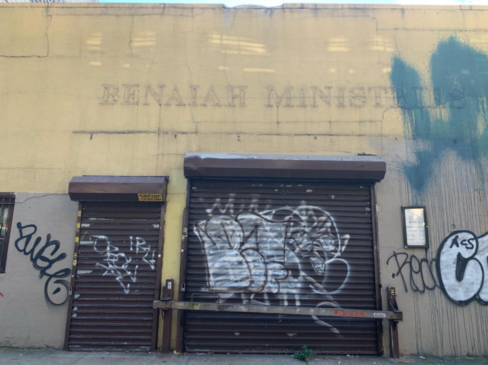

Almost a year after losing their building, members of Benaiah Ministries hold services every Sunday from noon to 1:30 p.m. at Brooklyn Landmark Elementary School. Since their move, the main objective is not to raise money for a new building but to raise money to give back to the Ocean Hill Community.
“It’s kind of like a blessing, because prior to [losing our building], we were doing some outreach but not at this level,” Catherine McCray, an associate pastor, said. “There was a time you can come to the church to get help, and that’s what the money is really for, to meet the needs of the people.”
The non-denominational church had previously rented a building on Broadway for 10 years before back-to-back flooding caused severe damage to the structure. Church members initially planned to fix the damages, but before they could do so, the owner decided to sell the building.
Over 100 members were left with nowhere to practice their faith and because of this, parishioners began asking local cafes and public schools for help.
When Brooklyn Landmark agreed to let Benaiah Ministries hold services in itsauditorium, they began to give back to their surrounding community.
In October, they conducted the first of many planned Random Acts of Kindness, where eight church members separated into three groups and divided about $600 in gift cards, movie tickets and metro cards as well as cash.
One group went to a local barber shop, one group went to a local laundromatand another to a dollar store down the street from the elementary school. Each group randomly selected families to receive their gifts.
Because the school has offered its space to Benaiah Ministries, Pastor Warrensaid church members have also thought of ways to give back to the school.
At the beginning of the school year, they raised money to buy 85 bookbags full of supplies for students at the school, as well as some other students who live in the community.
As for owning their own church, Pastor Thomas Warren says they plan to start their search in early 2021. Currently they are saving as much money as they can so that their next space is purchased and not rented.
“We are saving to purchase our next space,” Pastor Warren said. “We do not want the ministry to be displaced again.It’s harder to rebuild when that happens and even more difficult to maintain connections to membership.”
Since their loss, Pastor Warren said 25 to 40 members attend most Sundays but over 100 remain on their membership roster.
This month, on Dec. 20, members of the church plan to go Christmas Carolingin the Ocean Hill area. They also plan to work with the Family Dollar down thestreet to buy Christmas gifts for children living in the community.
About
Subscribe to our Newsletter
Contact
Careers
Terms and Conditions